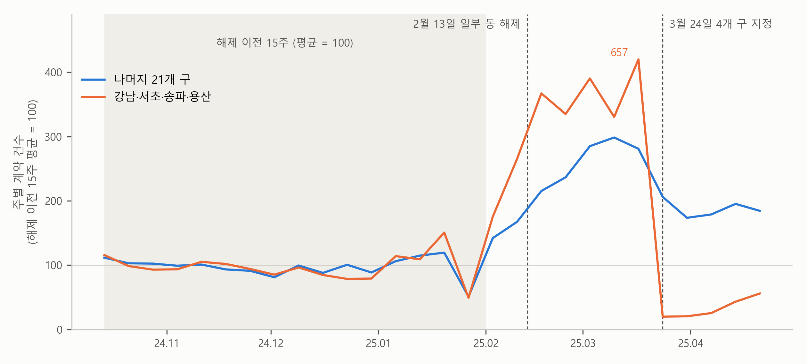

3. 나란히 움직였을까 — 지정 전 다섯 달#
보고서의 한계는 이렇게 시작합니다.
지정이 없었다면 4개 구도 21개 구처럼 움직였으리라는 가정 위의 숫자다. 지정 전에 비슷하게 움직였다는 것은 근거일 뿐 증명이 아니다.
앞 절에서 21개 구가 줄어든 만큼을 빌려 와 4개 구의 대역을 세웠습니다. 대역 배우는 주연 배우와 닮아야 화면에서 티가 나지 않는다고 했습니다. 이중차분의 대역은 무엇이 닮아야 할까요?
미리 답부터 말하면, 지정이 없었다면 두 그룹이 나란히 움직였어야 합니다. 그런데 지정 뒤의 “지정이 없었다면”은 볼 수 없으니, 이 가정은 자료로 확인할 수 없습니다. 할 수 있는 것은 지정 전에 두 그룹이 나란히 움직였는지를 보는 것입니다. 이 절에서는 아파트의 지정 전 다섯 달을 보고, 대역이 맞으려면 필요한 것을 하나 더 짚은 뒤, 지정 뒤 4주라는 숫자를 어떻게 해석할지 봅니다.
나란히 움직였다는 것 — 평행 추세#
앞 절의 보충수업에서 대역은 “보충수업을 들은 학생도 듣지 않은 학생만큼 올랐을 것이다”였습니다. 보충수업이 없었다면 두 학생의 점수가 같은 만큼 오르내렸으리라는 것이고, 점수를 선으로 그리면 두 선이 높이는 달라도 나란히 갔으리라는 것입니다. 이 가정을 평행 추세(parallel trends) 가정이라고 부릅니다.
아파트에서는 두 그룹 모두 지정 직전을 100으로 맞췄으니, 나란히 움직였다는 것은 같은 비율로 늘고 줄었다는 뜻입니다. 지정이 없었다면 4개 구도 21개 구처럼 100에서 73이 되었으리라는 것이 보고서의 가정입니다.
이 가정이 왜 중요한지는 단열 공사로 보면 쉽습니다. 앞 절에서 옆집 난방비가 7만 원 오른 것을 1월의 추위 몫으로 보았습니다. 그런데 옆집에 1월에 아기가 태어나 난방을 더 세게 틀었다면 어떨까요? 옆집의 7만 원에는 추위 말고 아기 몫이 들어 있으니, 우리 집의 “공사를 하지 않았다면”을 7만 원으로 세우면 대역이 너무 높아집니다. 공사의 효과 3만 원도 그만큼 부풀려집니다. 두 집이 추위에는 똑같이 반응했더라도, 한 집에만 다른 일이 생기면 두 집은 나란히 움직이지 않습니다.
지정 전 다섯 달 — 나란히 가다가 2월에 벌어졌다#
볼 수 없는 지정 뒤 대신, 지정 전에 두 그룹이 나란히 움직였는지를 봅니다. 그림 3-1은 2024년 10월부터 2025년 4월까지의 주별 계약 건수를 그린 것입니다. 이번에는 기준을 지정 직전 4주가 아니라 그보다 앞선 15주로 잡아, 그 평균을 100으로 맞췄습니다.

그림 3-1. 주별 아파트 매매 계약 건수, 2024년 10월 14일 ~ 2025년 1월 26일의 평균 = 100. 4개 구의 3월 17일 주는 657로 그림 밖까지 올라가 위를 잘랐다.
그림에서 보듯이 회색 띠의 15주 동안 두 선은 거의 겹쳐 있습니다. 같이 오르내리고, 띠가 끝난 바로 뒤 설 연휴가 낀 1월 말 주에는 함께 꺼졌습니다. 월별로 보아도 4개 구의 계약은 21개 구의 0.27배에서 0.32배 사이에 머물렀습니다. 이 15주만 보면 21개 구는 4개 구의 대역으로 손색이 없어 보입니다.
그런데 2월부터는 다릅니다. 두 그룹 모두 계약이 늘었지만 4개 구가 훨씬 빨리 늘어, 지정 직전 4주에는 21개 구가 259, 4개 구가 356이 되었습니다. 2월 13일에 잠실·삼성·대치·청담의 허가구역이 풀렸고, 이 네 동은 모두 4개 구 안에 있습니다. 4개 구에만 일어난 일이 있었던 것입니다. 단열 공사의 옆집에 아기가 태어난 것과 같은 구조입니다.
이것이 앞 절의 계산에 무엇을 뜻할까요? 보고서는 지정 직전 4주를 기준으로 삼았는데, 그 4주에 4개 구의 계약은 해제 때문에 평소보다 많이 부풀어 있었습니다. 지정이 없었다면 4개 구의 계약이 그 높이에서 21개 구처럼만 줄었을지, 해제의 열기가 식으며 더 많이 줄었을지는 이 자료로 가릴 수 없습니다.
기준을 해제 이전 15주, 곧 그림 3-1의 회색 띠로 옮겨 다시 계산해 보면, 21개 구는 100에서 188이 되었고 4개 구는 100에서 27이 되었습니다. 이번에는 4개 구가 지정이 없었을 때의 약 15%로 나옵니다. 보고서의 약 10분의 1보다 조금 크지만, 크게 줄었다는 결론은 같습니다. 기준을 어디로 잡느냐는 계산의 편의 문제가 아니라, 두 그룹이 어느 기간에 나란했다고 볼 것인가를 고르는 일입니다. 그래서 숫자가 기준에 따라 얼마나 움직이는지를 함께 보아 두면 좋습니다.
💡 팁: 이중차분 보고서를 받았다면 AI에게 이어서 물어보세요. “처치 전 기간의 두 그룹 추세를 그림으로 보여 주고, 처치 직전에 한쪽 그룹에만 일어난 일이 있는지 점검해 줘. 기준 기간을 바꿔 가며 추정하면 결과가 얼마나 달라지는지도 보여 줘.” 처치 직전에 한쪽에만 일어난 일은 자료가 알려 주지 않으므로, 그런 일이 있었는지는 분석을 맡기는 사람이 알려 주어야 합니다.
비교 상대도 영향을 받았다면#
대역이 맞으려면 하나가 더 필요합니다. 비교 상대는 처치의 영향을 받지 않았어야 합니다. 보충수업을 듣지 않은 학생이 보충수업을 들은 친구의 노트를 빌려 공부했다면, 그 학생의 점수에도 보충수업의 몫이 조금 들어갑니다. 그러면 듣지 않은 학생이 오른 만큼을 빌려 세운 대역이 너무 높아지고, 보충수업의 효과는 실제보다 작게 나옵니다.
아파트에서는 방향이 거꾸로일 수 있습니다. 4개 구에서 집을 사려던 사람 가운데 일부가 지정 뒤에 허가가 필요 없는 21개 구로 눈을 돌렸다면, 21개 구의 계약은 지정이 없었을 때보다 덜 줄었을 것입니다. 그렇다면 21개 구의 73은 지정이 없었을 때의 움직임보다 높고, 4개 구의 대역도 그만큼 높아져 지정의 효과가 부풀려집니다. 그런 일이 얼마나 있었는지는 이 자료로 가릴 수 없습니다. 보고서가 한계의 둘째 줄에 적은 것이 이 걱정입니다.
허가를 기다린 계약#
보고서 한계의 셋째 줄은 숫자를 어떻게 받아들일지에 대한 것입니다. 지정 뒤 4개 구에서 아파트를 사려면 계약 전에 구청의 허가를 받아야 하고, 허가에는 시간이 걸립니다. 그러니 지정 직후에는 집을 사려던 사람도 허가를 기다리느라 아직 계약을 맺지 못했을 수 있습니다. 실제로 4개 구의 주별 계약은 지정 뒤 첫 두 주에 36건과 37건이었다가 넷째 주에는 78건으로 늘었습니다.
그렇다면 지정 뒤 4주 동안 줄어든 계약에는 거래를 아예 접은 몫과 함께 잠시 뒤로 밀린 몫이 섞여 있습니다. 약 10분의 1은 지정 직후 4주의 숫자입니다. 같은 계산을 지정 뒤 8주로 늘리면 약 5분의 1, 12주로 늘리면 약 4분의 1이 남습니다. 보고서의 그림에서도 5월과 6월로 갈수록 4개 구의 선이 조금씩 올라옵니다. 다만 시간이 지나며 늘어난 몫에는 밀렸던 계약뿐 아니라 사람들이 허가 절차에 익숙해지며 되살아난 거래도 섞여 있을 수 있고, 둘은 이 자료로 가를 수 없습니다.
아파트 자료로 알 수 없는 것#
이 절에서 본 것은 모두 짐작의 근거입니다. 아파트 자료에는 정답이 없어서, 2월의 사정 때문에 약 10분의 1이 실제로 얼마나 빗나갔는지는 알 수 없습니다. 가정이 깨지면 이중차분의 답이 얼마나 빗나가는지를 숫자로 보려면 정답이 있는 자료가 필요합니다. 다음 절에서 인과 장의 일자리 제공 프로그램 자료로 그것을 봅니다.
요약 — 이 절의 물음과 답
이중차분의 대역이 맞으려면 무엇이 필요할까? 처치가 없었다면 두 그룹이 나란히 움직였어야 한다(평행 추세). 그리고 비교 상대는 처치의 영향을 받지 않았어야 한다. 둘 다 처치 뒤의 볼 수 없는 미래에 대한 가정이라 자료로 확인할 수 없다.
지정 전에 두 그룹은 나란히 움직였을까? 해제 이전 15주에는 거의 겹쳤지만, 2월 13일 일부 동의 해제를 앞뒤로 4개 구가 훨씬 빨리 늘었다. 기준을 해제 이전 15주로 옮기면 남은 몫은 약 10분의 1에서 약 15%로 바뀌지만, 크게 줄었다는 결론은 같다.
지정 뒤 4주의 약 10분의 1은 어떻게 읽어야 할까? 허가를 기다리느라 뒤로 밀린 계약이 섞여 있다. 4개 구의 계약은 지정 뒤 주마다 조금씩 늘어, 지정 뒤 8주로 늘리면 남은 몫이 약 5분의 1, 12주로 늘리면 약 4분의 1이다.